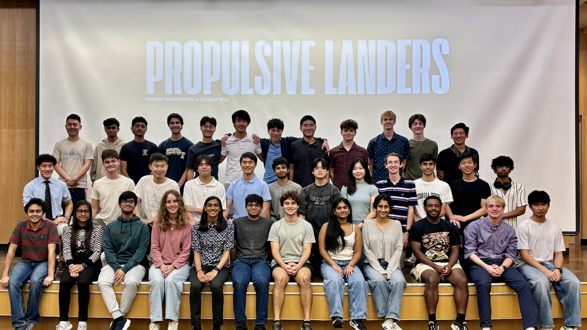

Propulsive Landers at Georgia Tech
Propulsive Landers Website
In the fall of 2024, I joined Propulsive Landers at Georgia Tech as a Guidance, Navigation, & Controls developer, where I worked on projects such as gimbal motor command translations and spline-based path planning and following algorithms. In the winter of 2025, I took on the role as a vice-lead for GNC algorithms. Since then, I have co-led the development of our rocket's control algorithm, the Linear Quadratic Regulator (LQR). Looking forward, we are working to develop a robust optimization algorithm to better determine the controls and paths required to minize fuel usage during aerial navigation.
